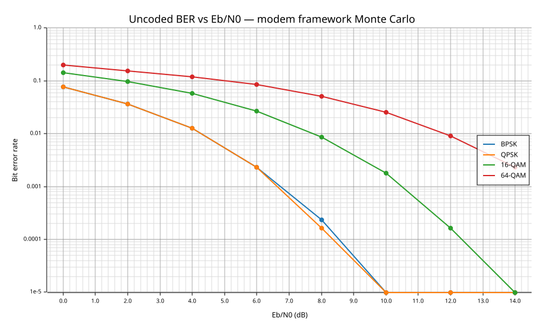
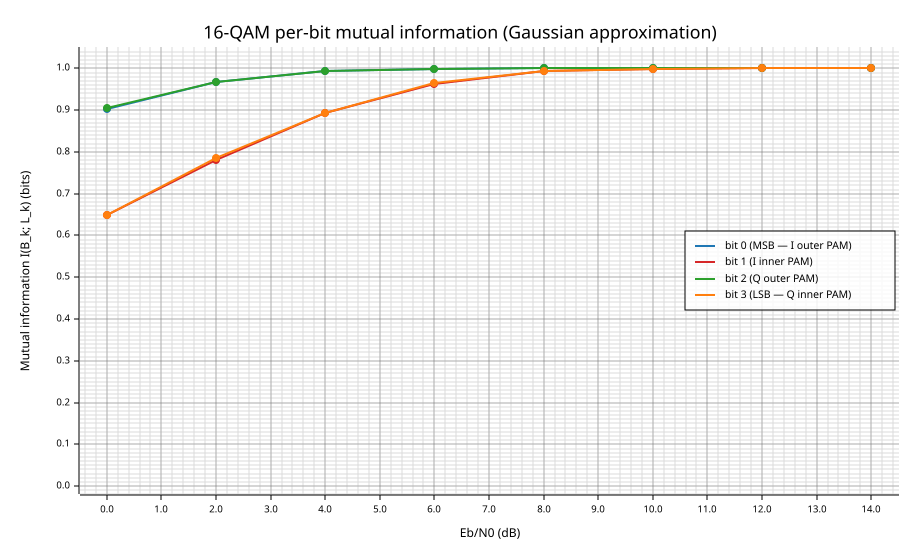
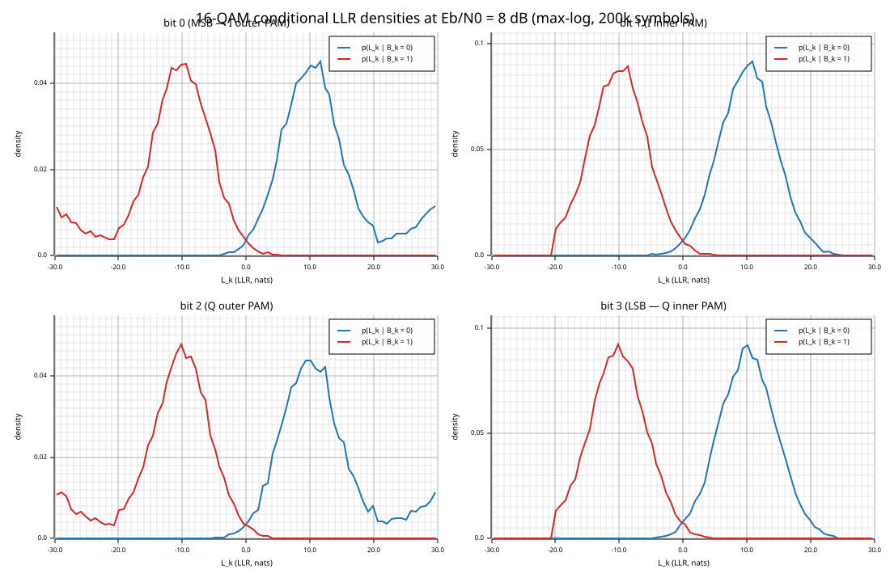

Gray-QAM up to 256-QAM · arbitrary custom constellations · opt-in per-bit analysis
AWGN + Rician fading · SIMD dispatch · optional GPU prototype
Closing out JIT epic d4851c3d
gf2-coding that you couldn't beforeFor researchers whose next experiment starts with "I need a QAM soft demapper and a place to drop in my weird constellation."
Roll your own mapper. Roll your own soft demapper. Copy the AWGN noise formula from the one test that had it. Hope your LLR sign convention matches the decoder.
Now: four public calls.
One shared modem surface rooted at gf2_coding::modem:
ModemSpec::bpsk(), ::gray_square_qam(4|16|64|256)ModemSpecBuilder for arbitrary (points, labels) constellationsGrayQamMapper + FastGrayQamDemapper (SIMD-dispatched)ReferenceMapper + ReferenceSoftDemapper (exact log-MAP, any labeling)ModemSpec::preferred_mapper() / ::preferred_soft_demapper() — auto-pick fast vs referenceBpskAwgnChannel, ModemChannelAdapter, QpskRicianChannelModel — all ChannelModelAnalysisCapture for per-bit LLR stats + MI/GMI estimatorsGpuGrayQamSoftDemapper behind the hip feature (experimental)Soft-decision demapping, noise-convention SSOT, and a validated builder — all in one place.
use gf2_coding::modem::{
DemapInput, DemapMethod, ModemSpec,
};
use gf2_coding::modem::awgn_link::{
unit_energy_sigma_sq_from_eb_n0_db,
unit_energy_n0_from_eb_n0_db,
};
// 1. Pick a preset. bits_per_symbol = 4 for 16-QAM.
let spec = ModemSpec::::gray_square_qam(16);
// 2. Let the framework pick the best backends (Gray-QAM fast path here).
let mapper = spec.clone().preferred_mapper();
let demap = spec.preferred_soft_demapper();
// 3. Bits -> I/Q symbols.
let mut rx_i = vec![0.0; num_symbols];
let mut rx_q = vec![0.0; num_symbols];
mapper.map_bits(&tx_bits, &mut rx_i, &mut rx_q);
// 4. Noise scale from the SSOT Eb/N0 helpers.
let sigma_sq = unit_energy_sigma_sq_from_eb_n0_db(4, /*rate*/ 1.0, 10.0);
let n0 = unit_energy_n0_from_eb_n0_db(4, 1.0, 10.0);
// ... add Gaussian noise with sigma_sq per axis ...
// 5. Demap to LLRs (symbol-major, MSB-first within each symbol).
let noise_var = vec![n0 as f32; num_symbols];
let mut llrs = vec![Default::default(); num_symbols * 4];
demap.demap_llrs(
DemapInput { rx_i: &rx_i, rx_q: &rx_q, gain_i: None, gain_q: None,
noise_var: &noise_var, method: DemapMethod::MaxLog },
&mut llrs,
);
Full runnable example: examples/modem_gray_qam_preset.rs
Non-square, non-Gray, non-uniform — anything that fits on the complex plane with a label-to-point bijection.
use gf2_coding::modem::{
BatchMapper, BatchSoftDemapper, DemapInput, DemapMethod,
LabelWord, ModemSpecBuilder, SymbolPoint,
ReferenceMapper, ReferenceSoftDemapper,
};
// 8-PSK with a non-Gray label permutation — builder accepts arbitrary specs.
let m: u8 = 3;
let points: Vec> = (0..8).map(|k| {
let theta = (k as f32) * core::f32::consts::PI / 4.0;
SymbolPoint::new(theta.cos(), theta.sin())
}).collect();
let labels: Vec = [3u16, 1, 6, 4, 0, 7, 2, 5]
.iter().map(|&b| LabelWord::new(b, m)).collect();
let spec = ModemSpecBuilder::::new()
.bits_per_symbol(m)
.points(points)
.labels(labels)
.build(); // validates label width, bijection, normalization, capabilities
let mapper = ReferenceMapper::new(spec.clone());
let demap = ReferenceSoftDemapper::new(spec); // exact log-MAP, arbitrary labeling
Full runnable example: examples/modem_custom_constellation.rs
Per-bit MI and GMI, histogram-based conditional LLR distributions — with a hard zero-overhead guarantee when disabled.
use gf2_coding::modem::analysis::{PerBitLlrStats, HistogramConfig, GmiMethod, gmi_bits};
use gf2_coding::modem::{AnalysisCapture, DemapMethod};
use gf2_coding::simulation::{SimulationConfig, SimulationRunner, BpskAwgnChannel};
// 1. Build an accumulator. Histograms opt-in (ranges and bin count are yours).
let mut stats = PerBitLlrStats::new(4).with_histogram(HistogramConfig {
min: -40.0, max: 40.0, num_bins: 256.try_into().unwrap(),
});
// 2. Tag the capture with the demap method your channel produces.
// Mismatched captures are rejected up front by the runner.
let mut capture = AnalysisCapture::with_method(&mut stats, DemapMethod::ExactLogMap);
// 3. Normal sim call. When analysis is disabled (None), zero extra work.
let _ = SimulationRunner::run_uncoded_ber_with_analysis(
&BpskAwgnChannel, &config, Some(&mut capture), &mut rng);
// 4. Read out per-position statistics + GMI.
let report = stats.report();
for r in &report {
println!("pos {} mean|L|={:.2} MI≈{:.3} bits (method={:?})",
r.bit_index, r.mean_abs_llr,
r.mutual_info_bits_gaussian_approximation, r.demap_method);
}
let gmi = gmi_bits(&report, GmiMethod::Histogram); // empirical from histograms
Uncoded Monte Carlo over AWGN driven through SimulationRunner::run_uncoded_ber_with_channel.
80 000 symbols per Eb/N0 point, seed locked. All four curves use the same
ModemChannelAdapter path — only the ModemSpec differs.

Reproducible via cargo run -p gf2-coding --example gen_presentation_figures --release.
The analysis framework exposes the "inner vs outer PAM bit" reliability gap that standard BER summaries hide. Gray-QAM's MSB bits (positions 0, 2 — outer PAM) climb toward 1 bit faster than the inner-PAM bits (1, 3).

Computed via AnalysisCapture::with_method(…, MaxLog) over 60 000 symbols per point; values are
mutual_info_bits_gaussian_approximation from PerBitChannelStats.
At Eb/N0 = 8 dB, 200 000 symbols, max-log demap. Outer-PAM bits (0, 2) are near-Gaussian; inner-PAM bits (1, 3) are bimodal — exactly the regime where the Gaussian-approximation MI estimate breaks down. This is why the framework ships a histogram-based MI/GMI estimator alongside it.

Histograms are read from PerBitChannelStats::{hist_bit0, hist_bit1}; bin counts normalised to densities.
| Layer | Public types | Where it lives |
|---|---|---|
| Presets | ModemSpec::{bpsk, gray_square_qam} | modem::presets |
| Custom builder | ModemSpecBuilder | modem::builder |
| Mappers | ReferenceMapper, GrayQamMapper | modem::{ref_mapper, gray_qam_mapper} |
| Soft demappers | ReferenceSoftDemapper, FastGrayQamDemapper | modem::{ref_demapper, fast_gray_qam_demapper} |
| Shared-API factories | ModemSpec::preferred_{mapper, soft_demapper} | modem::spec |
| Channels | BpskAwgnChannel, ModemChannelAdapter, QpskRicianChannelModel | simulation, modem::awgn_link, fading |
| Analysis | PerBitLlrStats, Histogram, AnalysisCapture, GmiMethod | modem::analysis, modem::analysis_capture |
| GPU (experimental) | GpuGrayQamSoftDemapper | modem::gpu_demapper (feature hip) |
| SIMD kernels | internal; dispatched at runtime | gf2-kernels-simd (AVX2/scalar auto-detect) |
One source of truth for noise scaling, PAM levels, and Eb/N0 math via modem::awgn_link.
CPU AVX2 fast-path FastGrayQamDemapper vs GPU HIP prototype,
µs per demap_llrs call.
| Order | Batch 256 | Batch 1 024 | Batch 4 096 | Batch 16 384 |
|---|---|---|---|---|
| 4 (QPSK) | CPU 3.7 / GPU 57 | 14 / 59 | 56 / 62 | 224 / 75 (3×) |
| 16 | 7 / 58 | 32 / 61 | 140 / 67 (2.1×) | 574 / 90 (6.4×) |
| 64 | 15 / 60 | 60 / 60 (parity) | 244 / 72 (3.4×) | 1 569 / 103 (15×) |
| 256 | 31 / 63 | 124 / 65 (1.9×) | 501 / 79 (6.4×) | 3 211 / 120 (27×) |
Takeaway: GPU wins above ~1k symbols for 64/256-QAM, above 4k for 16-QAM, and only at 16k for QPSK.
GPU always loses at batch = 256.
Full decision doc: dev/active/9c37ec8c-gpu-crossover-decision.md
AVX2 speedup over the scalar full demapper is only 1.04–1.20× — per-symbol validation/reduction dominates the budget, not the per-axis kernel.
Option<&mut _> collapses)gf2_core::rng::Lcg) is simulation-grade, good to ~10⁻⁵. For ~10⁻⁹ work, swap in rand_chacha.gfp/gfpn finite-field arithmetic, not the modem path itself.
Known follow-on work is tracked in the decision doc and under JIT 19069bc1 (GPU story).
5fd315c0 forward — single pivot cleared 5 issues stuck on the same SSOT finding.a23646dd. A local variable named sigma_squared was semantically N0. Now there's one SSOT helper, module-wide.modulation.rs deleted outright. channel.rs went from 832 → 200 LoC.gf2_core::rng::Lcg under a new sub-task created mid-epic.jit doc add.crates/gf2-coding/src/modem/mod.rs (module header)cargo run -p gf2-coding --example modem_gray_qam_preset --releasecargo run -p gf2-coding --example modem_custom_constellation --releasecargo run -p gf2-coding --example modem_simulation_harness --releasecargo run -p gf2-coding --example gen_presentation_figures --release — regenerates the three SVGs in this deck from fresh simulationscargo bench -p gf2-coding (4 criterion suites: modem_cpu, modem_generic_vs_fast, cpu_dispatch_probe, simulation_no_analysis_overhead)cargo test --manifest-path crates/gf2-kernels-hip/Cargo.toml --release on a ROCm hostdev/active/9c37ec8c-gpu-crossover-decision.mddev/active/d4851c3d-completion-report.md
Epic d4851c3d — "Implement QAM modulation with soft-decision demapping" — closed 2026-04-15.
Questions, weird constellations, crossover measurements welcome.